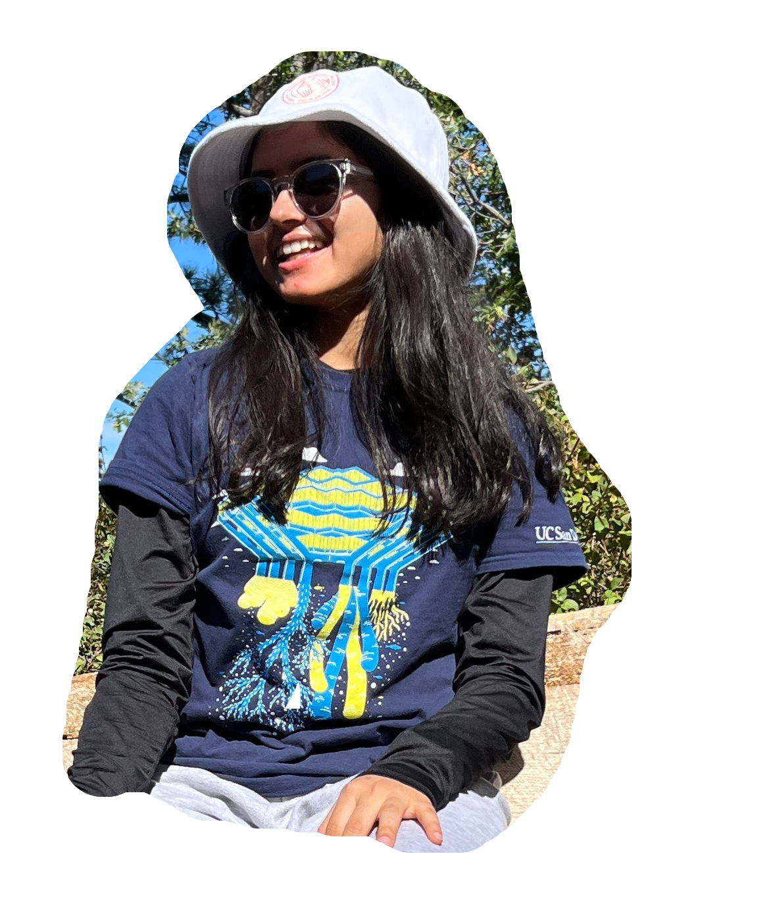

Hey! I'm Prabina

I'm a senior at UC San Diego, studying Data Science and Business-Economics. I am currently based in sunny San Diego, California 🌴.
I am an aspiring data scientist exploring the many possibilities of using data for the greater social good and contributing to transparency and accountability. Currently, I am working with an AI lab at UCSD to predict lane changing behavior of surrounding vehicles on the highway. I have a strong passion for utilizing data analysis and machine learning techniques to address pressing issues, such as fraud detection. One such project aims to help governments and NGOs
detect which entities are most likely to be involved in suspicious activities. (See projects for
more).
Outside of school, I enjoy hiking, running, watching F1, and playing badminton. (See adventures for more).
Feel free to reach out: